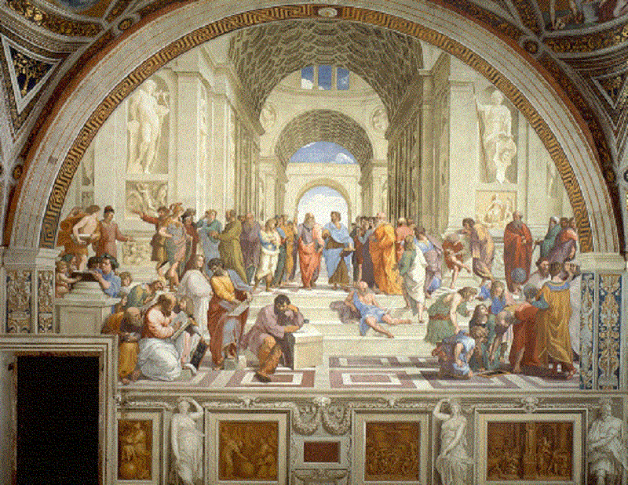

<!DOCTYPE html>
<html lang="en">
    <head>
        <meta charset="UTF-8">
        <meta name="viewport" content="width = device-width, initial-scale = 1.0">
        <meta http-equiv="X-UA-Compatible" content="ie=edge">
        <title>Wang-Wei Yu</title>
        <!-- reset -->
        <link rel="stylesheet" href="./css/reset.css">
        <!-- public -->
        <link rel="stylesheet" href="./css/base.css">
        <!-- current -->
        <link rel="stylesheet" href="./css/seminars.css">
        <!-- font -->
        <link rel="icon" href="./pic/favicon.ico">
        <!-- Js -->
        <script src="./js/app.js"></script>
        <script src="https://polyfill.io/v3/polyfill.min.js?features=es6"></script>
        <script id="MathJax-script" async src="https://cdn.jsdelivr.net/npm/mathjax@3/es5/tex-mml-chtml.js"></script>
        
</html>

<body>
    <div class="topbar-wrapper">
        <div class="topbar w clearfix">
            <nav class="nav-button">
                <div class="bg"></div>
                <button class="button"></button>
            </nav>
            <ul class="service">
                <li><a href="./index.html">Wang-Wei Yu</a></li>
            </ul>

            <ul class="service1">
                <li><a href="./me.html">About Me</a></li>
                <li class="line">|</li>
                <li><a href="./CV.html">CV</a></li>
                <li class="line">|</li>
                <li><a href="./reseach.html">Reseach</a></li>
                <li class="line">|</li>
                <li><a href="./publications.html">Publications</a></li>
                <li class="line">|</li>
                <li><a id="current" href="./seminars.html">Seminars</a></li>
            </ul>
        </div>
    </div>

    <div class="webcover w">
        
    </div>


    <div class="window"> 
        <div class="fp clearfix">
            <div class="seminarHost">
                <h1> Seminars </h1>
                <p>I love seminars. In seminars, we talk, learn and laugh.</p>
                <p>I host an online <a href="https://code.itp.ac.cn/yww/seminar">journal club </a>
                    in every Thursday's morning 10 am. We talk gravity, cosmology, astrophysics, data analysis even some tools for working.
                    You are very welcome to join us online.
                </p>

                <p>On Thursdays afternoon, 2:30 pm, I host a <a href="https://code.itp.ac.cn/yww/seminar">group seminar</a>. In this seminar, we in our groups will share some interesting results from our works.
                </p>

            </div>

            <div class="IGive">
                <h1> Seminars and conference talks given by me</h1>
                <p>
                    <li><i>No-Go Guide for the Hubble Tension</i>,Session talk in <a href="http://www.gr23beijing.com/">23rd International Conference on General Relativity and Gravitation (GR23)</a>, July 2022 <a href="./../files/seminar/GR23B4July8thYu.pdf">[slides]</a> <a href="https://www.koushare.com/video/videodetail/30376">[video]</a>  </li>
                    <li><i>Can Local Phyiscs Resolve the Hubble Tension?</i>, Forum talk in Partical Phyiscs and Cosmology, July 2021 </li>
                    <li><i>Dose the observational data favor a local void?</i>,Session talk in 2020/2021 Annual Meeting of Division of Gravity and Relativisitc 
                    Astrophysics, Chinese Phyiscal Society, April 2021</li>
                </p>
            </div>

            <div class="ArXiv">
                <h1>arXiv I interested everyday</h1>
                <h2><a href="https://arxiv.org/abs/2209.00033">[ArXiv:2209.00033]</a>Perturbation Theory Remixed: Improved Nonlinearity Modeling beyond Standard Perturbation Theory</h2>
                <h3>by <i>Zhenyuan Wang</i> et al.</h3>

                <p>
                    They present a novel nEPT (nth-order Eulerian Perturbation Theory) scheme to model the non-linear density field by the summation up to nth-order density fields 
                    in perturbation theory. The method can accelerate the forward modeling of the non-linear cosmological density, an indispensable proble of cosmic 
                    mysteries such as inflation, dark energy, and dark matter.
                </p>

                <p>
                    GridSPT provides a way to compute the matter density field \(\delta \) and the velocity field v of LSS perturbatively by solving the fluid equations.
                    In the standard practice of SPT, they assume irrotational velocity and expand the density field and the normalized velocity-divergence field. The 
                    crucial difference between nEPT and the usual PT is that in nEPT, they first compute the nonlinear density up tp a fixed order n, then estimate 
                    the summary statistics, such as power spectrum and bispectrum, directly from \(\delta\).
                </p>

                <h2><a href="https://arxiv.org/abs/2209.00043">[ArXiv:2209.00043]</a>A new era of intracluster light studies with JWST</h2>
                <h3>by <i>Mireia Montesg</i> and <i>Ignacio Trujillo</i></h3>
                <p>
                    Still largely unexplored, the diffuse light in cluster of galaxies traces the past and on-going buildup pf these massive structures. They present 
                    the first comprehensive study of the interacluster light (ICL) of the cluster SMACS-J0723.3-7327 (z=0.39) using the JWST Early Release Observations.
                </p>

                <h2><a href="https://arxiv.org/abs/2209.00184">[ArXiv:2209.00184]</a>Cosmic voids and the kinetic analysis</h2>
                <h3>by <i>V.G.Gurzadyan</i> et al.</h3>
                <p>
                    The kinetic approach to the formation of the filaments in the large-scale matter distribution in the Universe is considered within the Vlasoc 
                    formalism. The structures arise due to the self-consistent dynamics, along with the repulsive term in the modified Newtonian gravity which
                    includes the cosmological constant. That modified gravity enables one to describe the Hubble tension as a result of two flows, the local and 
                    global ones. The emergence of two-dimensional structures as Zeldovich pancakes is currently associated with density perturbations, whose growth 
                    is described by classical or weakly relativistic hydrodynamics, without considering the role of gravity. 
                </p>

                <p>
                    <li>
                        Within the formalism of the Vlasov equation - can also lead to similar filamentary structures.
                    </li>
                    <li>
                        A kinetic model and revealed the occurrence of semiperiodicity of the arisen strucutres - voids - separated by two-dimensional surfaces (walls).
                    </li>
                </p>

                <h2><a href="https://arxiv.org/abs/2209.00270">[ArXiv:2209.00270]</a>The spin-up of a star gaining mass in a close binary system on the thermal time scale</h2>
                <h3>by <i>Evgeny Staritsin</i></h3>
                <p>
                    The mass-transfer phase in a massive close binary system in the Hertzprung-gap is accompanied by the spinning up of the accreting component. The mass and 
                    angular momentum of this star increase due to the accretion of part of the matter and the angular momentum lost by the other star due to Roche lobe filling.
                    Mass transfer in a close binary could be the reason for the rapid rotation of Be stars.
                </p>
                <p>
                    <li>
                        the Hertzsprung Gap is a region of the HR diagram just between the Main Sequence and the Red Giant Branch, and is notable for having almost no stars - hence the term “gap”. In the picture above, it’s represented by the narrowing of the background colour just below the “giants” grouping of stars.
                        from <a href="https://astroquizzical.com/astroquizzical/what-is-the-hertzsprung-gap-and-what-happens-to#:~:text=The%20Hertzsprung%20Gap%20is%20a%20feature%20within%20the,began%20to%20take%20his%20name%20as%20a%20descriptor.">What's the Hertzsprung Gap?</a>
                    </li>
                    <li>
                        The Roche lobe is the region around a star in a binary system within which orbiting material is gravitationally bound to that star. It is an approximately teardrop-shaped region bounded by a critical gravitational equipotential, with the apex of the teardrop pointing towards the other star (the apex is at the L1 Lagrangian point of the system).
                        from <a href="https://handwiki.org/wiki/Physics:Roche_lobe">Physics:Roche lobe</a>
                    </li>
                    <li>
                        Be star.
                    </li>
                    <li>
                        Critical rotation can be characterised by the critical rate of surface rotation and the subcritical rotation of the inner layers.
                    </li>
                    <li>
                        During the mass-transfer phase, the mass of the star increases by a factor \(\sim 1.5\), and the angular momentum increases by a factor of \(\sim 50\).
                    </li>
                </p>

                <h2><a href="https://arxiv.org/abs/2209.00589">[ArXiv:2209.00589]</a>The spin-up of a star gaining mass in a close binary system on the thermal time scale</h2>
                <h3>by <i>Evgeny Staritsin</i></h3>
                <p>
                    Kasner cosmology is a vaccum and anisotropically expanding spacetime in the general relativity context. The bumblebee model, where the Lorentz symmetry
                    is spontaneously broken. The origin of the anisotropy in this cosmological model could be in the Lorentz symmetry breaking.
                </p>

                <p>
                    <li>
                        Bianchi I cosmology.
                    </li>
                    <li>
                        Kasner geometry was obtained in 1921 from a problem of embedding geometries into a flat and higher dimensional spacetime.
                    </li>
                    <li>
                        The weirdness of the Kasner cosmological model is due to the fact that such spacetime is a vaccum and anisotropic solution of Einstein's field 
                        equations that describes an expanding universe.
                    </li>
                </p>
                
    
    </div>
    <a style="display: none; font-size: 40px;" href = "javascript:;" class="backToTop" title="Back to Top" id="backToTop"> &#8682; </a>
</body>
